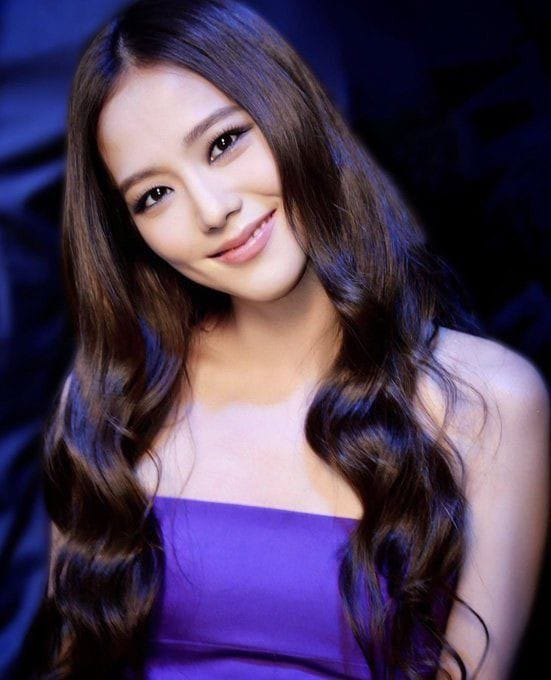

Kim Ji-soo , Jisoo
cantora e atriz sul-coreana.

Biografia da Ji-soo
Kim Ji-soo, referenciada como Jisoo, é uma cantora e atriz sul-coreana. É integrante do grupo BLACKPINK, formado em 2016 pela YG Entertainment. Data de nascimento 03 de janeiro de 1995 (03.01.1995) Signo Capricórnio Altura 1,62cm Peso 45kg Tipo sanguíneo A Grupo Blackpink Posições Vocalista líder, Visual Período em atividade 2016 – Atualmente Empresa YG EntertainmentLinha do tempo
1995 No dia 03 de janeiro de 1995 nasceu a jisoo.
2011ingressou na YG Entertainment por meio de audições como trainee.
2015Em 2015, fez uma participação especial no drama da KBS2,The Producers com os colegas de gravadora Sandara Park do 2NE1 e Kang Seung-yoon do Winner.
2016 Estreou como uma das quatro integrantes do BLACKPINK em 8 de agosto de 2016, ao lado de Jennie, Rosé e Lisa,
com o lançamento do single álbum Square One.Jisoo é a integrante mais velha do grupo
2019 Em dezembro de 2019, Jisoo tornou-se uma embaixadora local da marca de cosméticos da Dior, "Dior Beauty". No verão seguinte, Jisoo foi recrutada para ser a musa da Dior e modelada para a coleção outono/inverno 2020 da Dior.Em setembro de 2020, Jisoo cobriu a 155ª edição 2020 da Dazed Korea, onde discutiu seu trabalho com a Dior.Ela também foi indicada como a primeira modelo principal para o projeto digital da Cartier no retorno de "Pasha de Cartier" para as gerações coreanas de MZ. Em dezembro de 2020, Jisoo foi fotografada com as bolsas Lady Dior e D'Lite na coleção Dior's Cruise 2020-2021.
2020 Em 18 de agosto de 2020,
YG Entertainment confirmou que Jisoo estrelaria seu primeiro papel fixo como atriz principal no drama coreano da JTBC, Snowdrop ao lado do ator Jung Hae-in.
2023 2023–presente: Estreia solo com ME. Em 2 de janeiro de 2023, a YG Entertainment anunciou que Jisoo estrearia como artista solo naquele ano e estava no meio das filmagens de um videoclipe.Em 5 de março, teasers foram enviados para as contas de mídia social do Blackpink, confirmando que seu projeto, Me, seria lançado em 31 de março de 2023.O álbum estreou no número um no Circle Album Chart com 1.03 milhão de cópias vendidas na primeira semana de lançamento, tornando Jisoo a primeira solista feminina de K-pop de um milhão de vendas na história.
2023 - presente Em 3 de agosto de 2023, por meio do tabloide sul-coreano Dispatch, foi revelado que Jisoo está em um relacionamento com o ator e modelo Ahn Bo-hyun. Logo depois, a notícia foi confirmada por sua empresa YG Entertainment
Se quiser saber mais sobre jisoo, Clique Aqui
Fontes utilizadas na página: eBiografia